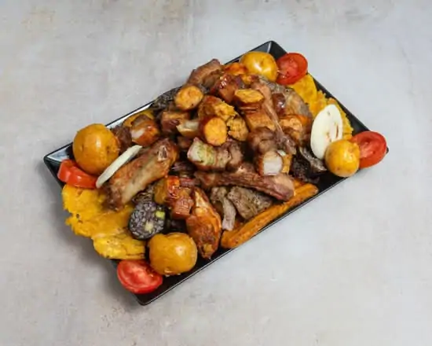
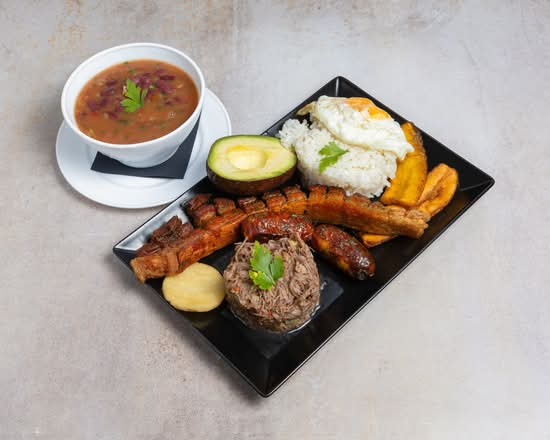
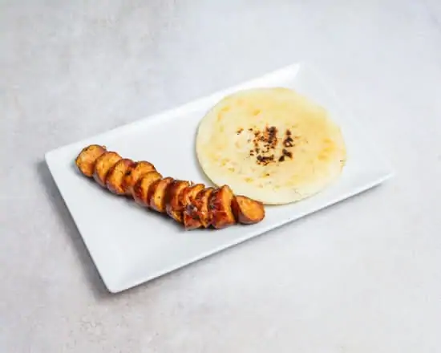

PicadaPicada Colombiana
Carne asada, costilla, chicharrón, chorizo, morcilla, alitas, patacón, maduro, yuca, papa criolla, arepa y tomate.
— EL SABOR DE COLOMBIA EN TU MESA
Nuestra tierra, nuestra pasión por la buena cocina. Recetas con carácter, platos para compartir y ese sabor de casa que convierte una comida en recuerdo.
La esencia de La Patrona
La Patrona combina el carácter de la cocina colombiana con una carta amplia pensada para distintos momentos: desayunos, platos contundentes, raciones para compartir, arepas, empanadas y bebidas colombianas.
Lo que pediríamos primero

PicadaCarne asada, costilla, chicharrón, chorizo, morcilla, alitas, patacón, maduro, yuca, papa criolla, arepa y tomate.

BandejaUno de los grandes clásicos colombianos de la carta.

ArepaArepa de maíz acompañada de chorizo.

La casa
La experiencia de La Patrona gira alrededor de una idea sencilla: comer bien, comer a gusto y encontrar sabores que recuerdan a casa. La carta mezcla clásicos colombianos con raciones y opciones populares para todos los momentos del día.
Opiniones
Buen acierto para la zona. Agradable, excelente ambiente y delicioso menú casero, como todo lo demás.
Susan JustinianoGoogle • Hace 5 meses
Soy colombiano y los platos en verdad se parecen mucho a los de mi país. El servicio es agradable y me parece un precio justo.
Esteban GarcíaGoogle • Hace 3 meses
Me encantó todo, la comida súper rica y variada, la atención ni que decir. Volveré sí o sí.
Dejanira LeonGoogle • Hace 5 meses
De 10, no pongo más estrellas porque solo hay 5. Delicioso y recomendable, sin duda repetiré.
María Gloria Acosta VerónGoogle • Hace 3 meses
Un sitio muy agradable y con muy buen servicio, muy amables. Menú del día muy variado y rico.
Alicia FernándezGoogle • Hace 5 meses
Cenamos de lujo, nos atendieron perfectamente, el servicio espectacular. Como dice Terminator, volveré.
Oscar LirioGoogle • Hace 3 meses
Visítanos
Av. del Alcalde José Aranda, 53 • Local 7
28924 Alcorcón, Madrid
Horario de apertura